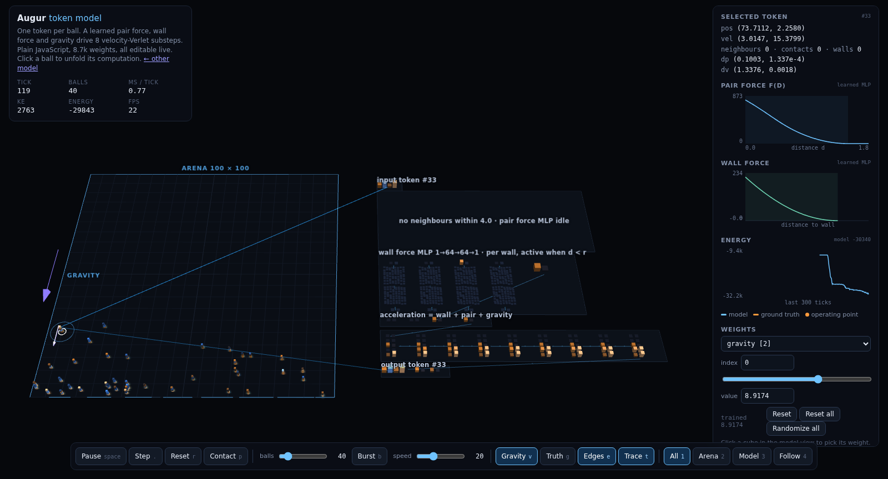

cons_pure.pt (middle), soup B (bottom). Soup B panels after step 75 show its last finite frame. A reviewer with no hypothesis primed saw truth and the token model match to about step 20; soup B stays packed.Adam Webb · Applied project
I am building and evaluating a learned simulator for 2D bouncing balls (walls, ball-ball contact, gravity) in which each ball is one state token (position, velocity) and a small network predicts the next state. The question is whether a physics-structured token model beats a generic graph network in accuracy, energy behavior and generalization to far more balls than it was trained on. The pass/kill rule from the proposal is unchanged: the structured model must beat the graph-network (GNS-style) baseline at tick 10 and in energy drift on all held-out seed sets, otherwise I report a negative result. It is now scored: PASS.
Data. A seeded 64-bit GPU force simulator (soft-penalty contact, stiffness 400; walls; gravity 9; ball radius 0.75; time step 0.15; 8 substeps) generates scenes at training time: a single ball, head-on pairs, 20x20 boxes with 2-6 balls, and wider boxes with up to 100 balls and speeds up to 40. There are 1,200 training and 100 validation scenes of 24 steps (seed 4738). Model (“conservative-contact token model”, 8,708 weights, no attention): a distance-only pair-force network (1-64-64-1) applied equal and opposite, which makes pair momentum exact; a wall-force network; a learned uniform gravity; and 8 velocity-Verlet substeps over a cell-list neighbor graph rebuilt each substep, so cost is linear in ball count. Training: unrolled loss on position and velocity over 1, then 4, then 8 steps, 50 epochs, about 39 minutes on one GPU (first run, cons_pure.pt). Evaluation: err@k is the mean position error per ball at tick k, with model and truth started from the same true state; also energy per ball, momentum error, wall restitution versus speed, and first non-finite step. Baselines: an older attention-plus-GRU token model (“soup B”, in place); constant velocity and a GNS-style message-passing network (547,458 weights, 3 message-passing layers, same data and unrolled loss, 30 epochs, about 10 minutes, one training seed).
cons_pure_100.pt (trained on at most 100 balls, seed 4738), which is the one the live page serves and the one tested at 50,000 balls. Table 1 uses it; Figure 2 used the earlier checkpoint cons_pure.pt.The structured model beats both the GNS-style baseline and soup B at tick 10 and in energy drift on all three held-out seed sets, so the pass/kill rule passes (Table 1); in a 1,000-ball, 500-step rollout it never goes non-finite while soup B fails at step 76. Trained on at most 100 balls, it stays finite on 50,000 balls for 100 steps: err@1/5/10/20 = 0.019 / 0.107 / 0.280 / 0.937, kinetic energy per ball 1.7% below truth at tick 100, and the model step (1.16 s) is as fast as the exact one (1.28 s).
| Metric | Soup B | GNS | Token |
|---|---|---|---|
| err@10, 4 balls | 0.53 | 1.44 | 0.22 |
| err@10, 100 balls | 0.46 | 1.09 | 0.27 |
| Drift@100, 100 balls | 1.47 | 0.74 | 0.08 |
| Wall restit. (truth 1) | 0.41–1.65 | 0.19–1.23 | 1.00–1.01 |
| First non-finite step | 76 | none | none |
Table 1. Harness results, checkpoint cons_pure_100.pt: seed sets 4738, 9000, 12000 pooled, 12 scenes each, true start; wall speeds 3-80; last row 1,000 balls, 500 steps. The token model wins err@10 and drift on every seed set separately.

cons_pure.pt (middle), soup B (bottom). Soup B panels after step 75 show its last finite frame. A reviewer with no hypothesis primed saw truth and the token model match to about step 20; soup B stays packed.cons_pure.pt learned gravity is 8.90 versus the true 9, leaving a constant 0.88 pair-momentum offset; Verlet, 8 substeps and the force scale mirror the truth integrator, a strong prior that is not yet ablated.